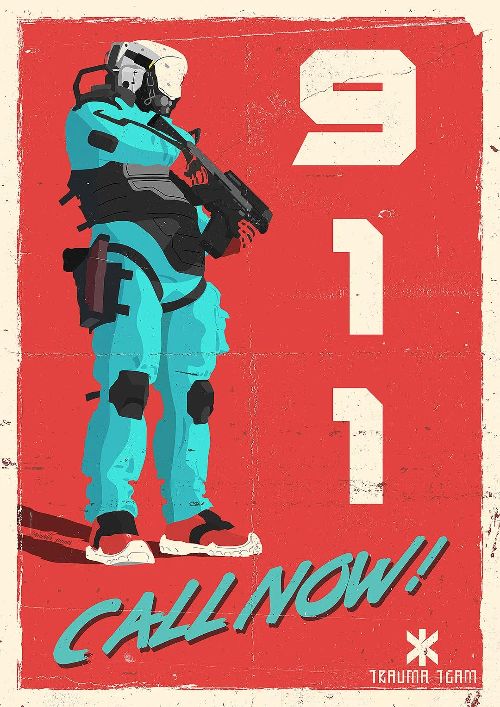
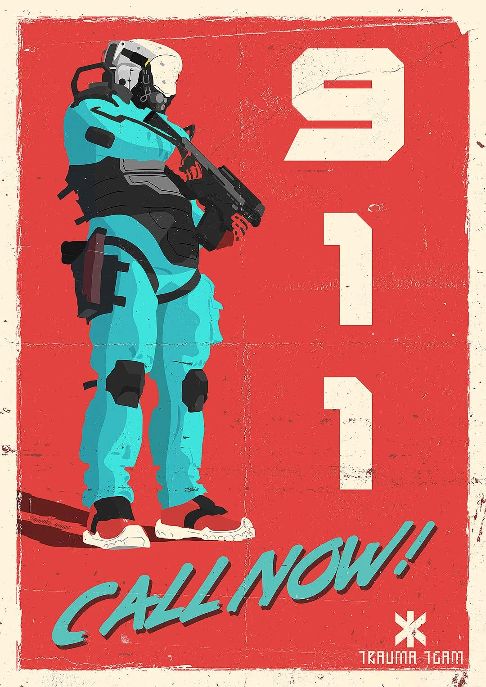

When someone is injured or falls ill, Trauma Team deploys a specialized team of paramedics, doctors and medical technicians to the scene. These teams are highly trained and capable of performing advanced medical procedures in the field. Trauma Team package service guarantees a patient is immediately rescued and treated by Trauma Team when they are injured or incapacitated. Traumatic injuries such as gunshot wounds, severe burns, and heart attacks are routinely handled by the Trauma Team as they have the equipment and expertise to stabilize and transport patients to the nearest medical facility.
The Civil Protection is a military organization, responsible for enforcing the law in areas under Nex's control. The Civil Protection will stop at nothing to maintain order, using force against anyone that performs crime or break laws. They have access to advanced equipment, including combat armor, helicopters, and armored vehicles, which they use to keep everything under control. The Civil Protection officers are tasked with stamping out any signs of resistance, and they will stop at nothing to complete their missions.
Unfortunately, even after reaching stars and having space colonies we humans still fight with each other, this is why we need soldiers to pick up the bad apples among us. Nexs soldiers are equipped with advanced weaponry, including high-tech firearms. They also wear heavy armored combat suits, which provide protection against most types of weapons and damage. Nexs soldiers are highly disciplined and trained to operate in team-based tactics, using advanced formations and strategies to achieve their objectives. They are masters of stealth and surprise, capable of using their advanced technology to gain an advantage over their enemies.